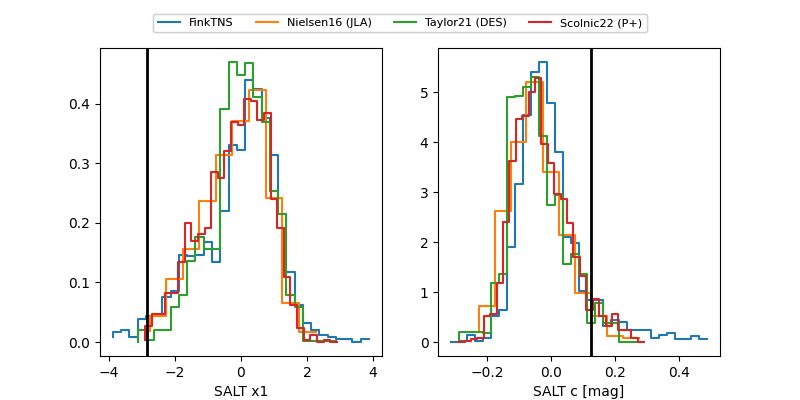

FINK: ZTF25abmuaub
Lasair: ZTF25abmuaub
ALeRCE: ZTF25abmuaub
TNS: 2025whr
YSE: 2025whr
ZTF25abmuaub (ztf,fink)
2025whr (tns,yse)
equatorial (ra, dec) = (323.1981,+27.87130)
galactic (l, b) = (78.0662,-17.22348)

last ztfg=19.96, ztfr=19.79
3 ztfg, 7 ztfr detections